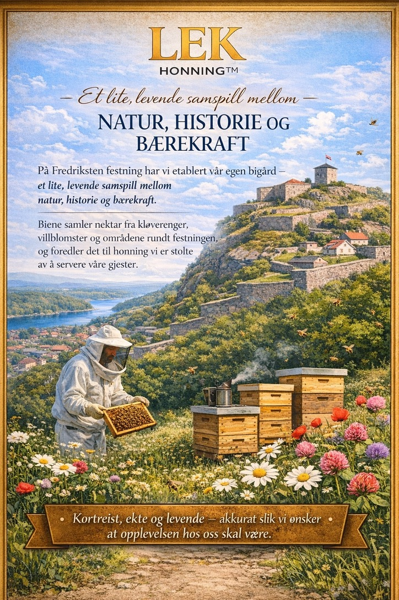
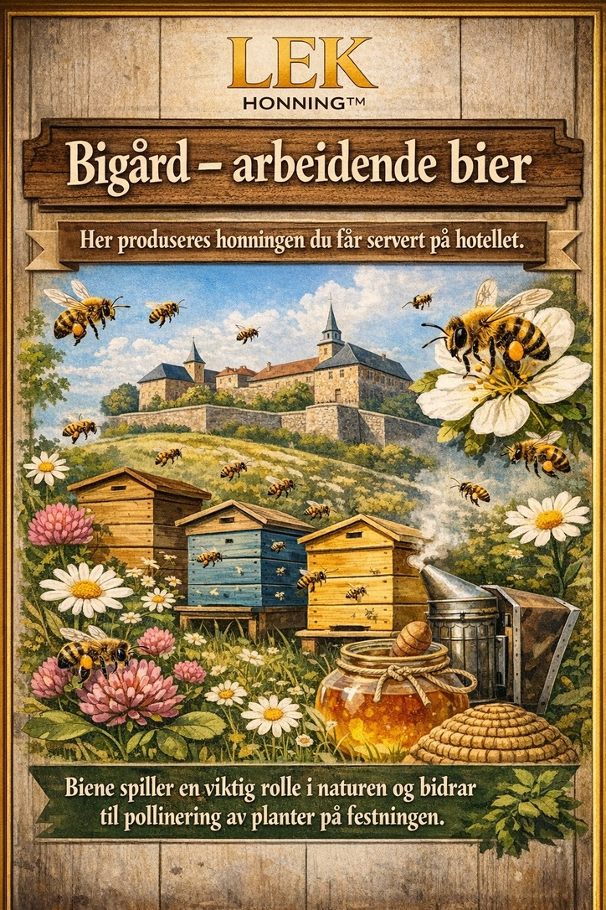
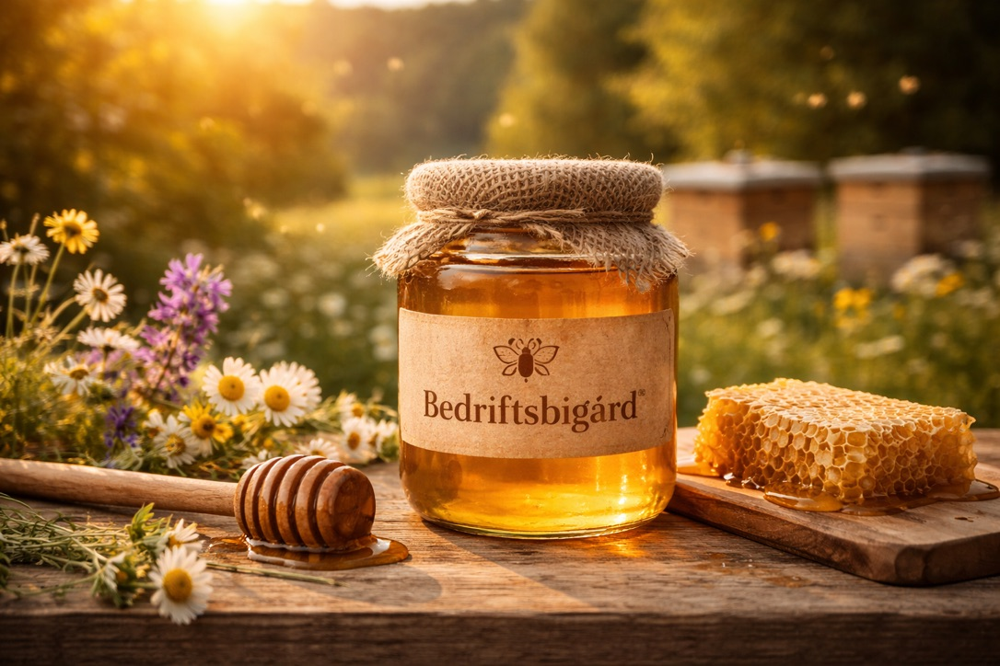

Om MinBigård
Vi leverer bedriftsbigård som en tjeneste. Målet er at dere får et tiltak som er synlig, konkret og lett å dokumentere.
Dette gjør vi
Vi planlegger plassering, etablerer bigård og tar hele driften: tilsyn, helse, fôring, vinterklargjøring og høsting. Dere får leveranser dere faktisk kan bruke.
Hvorfor det fungerer
En bigård gir både et fysisk tiltak og et produkt (honning). Det gjør bærekraftsarbeidet enklere å forklare for gjester, ansatte og kunder.
Typiske kunder
Hotell, eiendom, industri og kommuner som ønsker en konkret miljøinnsats med tydelig leveranse og dokumentasjon.
Teknologi møter tradisjon
MinBigård er bygget på en kombinasjon av praktisk birøkting og avansert teknologi. Gründer Richard Thoresen er en del av akselleratorprogrammet til Smart Innovation Norway, hvor plattformen videreutvikles med fokus på AI, sporing og dokumentasjon av naturtiltak.
«Fra salmaker til redningsmann for bier og biologisk mangfold! Denne våren har jeg hatt gleden av å bli kjent med Richard Thoresen – og samtidig lært en del om birøkting.
I forrige uke hadde vi nok en prat, i anledning at Richard er del av vårt akselleratorprogram. Under møtet viste Richard meg tech-stacken i softwareproduktet sitt og gikk gjennom hvordan han jobber med utvikling, testing og opptrening av kunstig intelligens i produktet sitt. Det var både lærerikt og ikke minst interessant.»


